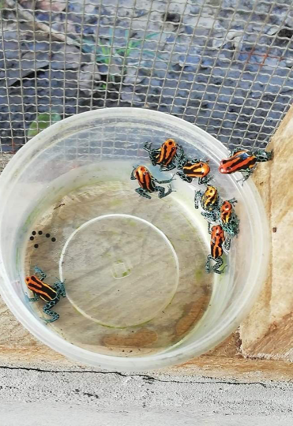

Sourcing adaptational genomic assets directly from natural wilderness hubs and ecologies to discover novel biological pathways.
To access the world's most specialized adaptational biology, Asperitas maintains global sourcing partnerships and localized field stations. Rather than relying solely on common model organisms, we source novel genomic and phenotypic databases directly from natural wilderness ecologies.
Our established footprint spans 31+ global operations across diverse ecosystems—bridging remote genetic reservoirs with our high-throughput AI design pipeline while strictly adhering to international biodiversity conservation guidelines.
The starting point of Asperitas is raw natural data. While standard biotech companies study model organisms like E. coli or yeast, we leverage global biological networks to access rare and specialized adaptational genetics.
Our foundation is built upon deep biodiversity operations, handling over 100 rare species (including CITES classifications) and distributing over 30,000 specimens globally since 2019. This proprietary infrastructure provides us with unique biological sourcing capabilities in Madagascar, Peru, Cameroon, Mexico, and Togo.
Documenting adaptational traits, toxic defense protocols, pigment structure codes, and circadian rhythms in wild environments.
Replacing high-cost shipping with localized breeding stations and sequencing field labs, fostering local employment and conservation.
Sequencing genomic, transcriptomic, and proteomic sequences, converting natural organisms into high-value IP digital databases.
Integrating ex situ conservation breeding programs, linking genetic database mapping with species restoration in original wild locations.

Global Species Supply Network
Asperitas sources and supplies live species from over 31 countries to zoos, aquariums, and research laboratories worldwide—backed by an importable catalog covering thousands of vertebrate species.
Vertebrate Species Cataloged
Source Countries
Explore the active inventory of biological species sourced and sustained across Asperitas global field stations. We track conservation status in compliance with IUCN and ABS protocols.
To request access to Asperitas biodiversity genomic databases, phenotypic datasets, or physical species specimens, please click the button below to submit your research inquiry.